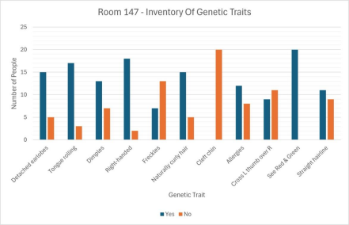

| Inquiry Question |
|---|
| How do my genetic traits compare to those of others? |
In this project, you will take an inventory of your own easily-observable genetic traits. Use the survey below to record the results of 20 people. Record your observations in a data table and make a bar graph to show the most common traits in your group. This activity can also be done with your family members.
| General Instructions |
|---|
| The goal of this project is to familiarize yourself with genetic traits, both your own and of others. |
| Materials you’ll need: the Survey: An Inventory of Genetic Traits; graphing software such as Excel or web-based graphing tools such as Google Sheets, if graphing electronically. Otherwise, you will need paper, a ruler and coloured pencils. |
| Ideas and Hints: 1. Complete the following Survey: An Inventory of Genetic Traits with 20 responders. 2. Save your completed work. |
| Project submission: Upload your completed trait inventory to the project drop box at the end of the unit. |
What combination of these traits do you have?
Complete the following survey to find out.
How many people in your group of 20 have each trait?
Fill in the data table below by counting the number of people who marked “yes” and the number who marked “no” for each trait.
| GENETIC TRAIT | YES | NO |
|---|---|---|
| Detached earlobes | ||
| Tongue rolling | ||
| Dimples | ||
| Right-handed | ||
| Freckles | ||
| Naturally curly hair | ||
| Cleft chin | ||
| Allergies | ||
| Cross left thumb over right - handclasping | ||
| See the colours red and green. | ||
| Have a straight hairline. |
Make a bar graph showing how many people in your survey answered ‘yes’ for each trait and how many people answered ‘no’. The bar graph should include a legend to indicate which colour represents the ‘yes’ and which colour shows the ‘no’ replies.
Be sure to label each trait under the bar. The trait will be the ‘independent variable’ and is shown on the x-axis (horizontal). On the y-axis (vertical), the number of people will be your ‘dependent variable’ as the number depends upon what trait you are considering. Both the x and y axes should be labelled to indicate what they represent.
Your graph should look similar to this;

Practice converting fractions into decimals and then decimals into percentages by calculating the frequency of the following traits in your survey.
Fill in the table below and compare your calculated frequencies with those for the general population (as provided in the table).
| Genetic Trait | Frequency in Your Group | Frequency in the General Population Note: many are approximations |
|---|---|---|
| Tongue rolling | Can roll tongue – 70% Cannot roll tongue – 30% | |
| Handedness | Right-handed – 93% Left-handed – 7% | |
| Hand clasping | Left thumb on top – 55% Right thumb on top – 44% No preference – 1% | |
| Can see Red and Green | Can see Red and Green – 95.5% Cannot see Red and Green – 4.5% | |
| Allergies | Allergies – 30% No Allergies – 70% | |
| Cleft Chin | Cleft chin – 26% No cleft chin – 74% | |
| Detached earlobes | Detached earlobes – 72% Attached earlobes | |
| Dimples | Has dimples – 25% Does not have dimples – 75% | |
| Freckles | Has freckles – 5% Does not have freckles – 95% | |
| Curly Hair | Naturally curly hair – 11% Not natural curly hair – 89% | |
| Have a straight hairline | Have a straight hairline – 41% Not have a straight hairline – 59% |
Write a short paragraph below (or attach a page) that addresses the inquiry question: “How do my genetic traits compare to those of others?”